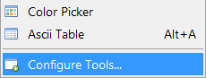
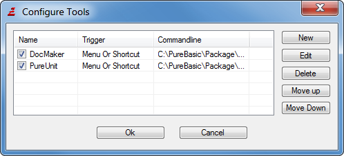
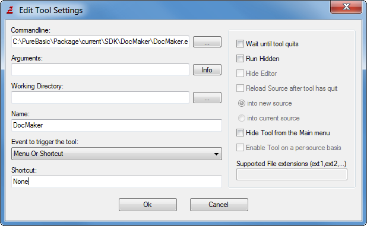
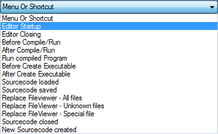

Using external tools
The PureBasic IDE allows you to configure external programs to be called directly from the IDE, through the Menu, Shortcuts, the Toolbar, or on special "triggers". The use of this is to make any other program you use while programming easily accessible.
With the "Config tools" command in the Tools menu, you can configure such external tools. The list you will see displays all the configured tools in the order they appear in the Tools menu (if not hidden). You can add and remove tools here, or change the order by clicking "Move Up"/"Move Down " after selecting an item.
Any tool can be quickly enabled or disabled from the "Config tools" window with the checkbox before each tool entry. A checked checkbox means the tool is enabled, an unchecked one means it is currently disabled.Configuring a tool
The basic things you need to set is the command-line of the program to run, and a name for it in the Tools list/Menu. Everything else is optional.
Command-line
Select the program name to execute here.
Arguments
Place command-line arguments that will be passed to the program here. You can place fixed options, as well as special tokens that will be replaced when running the program:
%PATH : will be replaced with the path of the current source code. Remains empty if the source was not saved.
%FILE : filename of the current source code. Remains empty if it has not yet been saved. If you configure the tool to replace the file viewer, this token represents the file that is to be opened.
%TEMPFILE : When this option is given, the current source code is saved in a temporary file, and the filename is inserted here. You may modify or delete the file at will.
%COMPILEFILE : This token is only valid for the compilation triggers (see below). This is replaced with the temporary file that is sent to the compiler for compilation. By modifying this file, you can actually change what will be compiled.
%EXECUTABLE : This will be replaced by the name of the executable that was created in with the last "Create Executable". For the "After Compile/Run" trigger, this will be replaces with the name of the temporary executable file created by the compiler.
%CURSOR : this will be replaced by the current cursor position in the form of LINExCOLUMN.
%SELECTION : this will be replaced by the current selection in the form of LINESTARTxCOLUMNSTARTxLINEENDxCOLUMNEND. This can be used together with %TEMPFILE, if you want your tool to do some action based on the selected area of text.
%WORD : contains the word currently under the cursor.
%PROJECT : the full path to the directory containing the project file if a project is open.
%HOME : the full path to the purebasic directory
Note: for any filename or path tokens, it is generally a good idea to place them in "" (i.e. "%TEMPFILE") to ensure also paths with spaces in them are passed correctly to the tool. These tokens and a description can also be viewed by clicking the "Info" button next to the Arguments field.
Working Directory
Select a directory in which to execute this tool. By specifying no directory here, the tool will be executed in the directory of the currently open source code.
Name
Select a name for the tool. This name will be displayed in the tools list, and if the tool is not hidden from the menu, also in the Tools menu.
Event to trigger the tool
Here you can select when the tool should be executed. Any number of tools can have the same trigger, they will all be executed when the trigger event happens. The order of their execution depends on the order they appear in the tools list.
Menu Or Shortcut
The tool will not be executed automatically. It will be run by a shortcut or from the Menu. Note: to execute a tool from the Toolbar, you have to add a button for it in the Toolbar configuration in the Preferences (see Configuring the IDE for more).
With this trigger set, the "Shortcut" option below becomes valid and lets you specify a shortcut that will execute this tool.
Editor Startup
The tool will be executed right after the IDE has been fully started.
Editor End
The tool will be executed right before the IDE ends. Note that all open sources have already been closed at this time.
Before Compile/Run
The tool will be executed right before the compiler is called to compile a source code. Using the %COMPILEFILE token, you can get the code to be compiled and modify it. This makes it possible to write a small pre-processor for the source code. Note that you should enable the "Wait until tool quits" option if you want your modifications to be given to the compiler.
After Compile/Run
The tool will be executed right after the compilation is finished, but before the executable is executed for testing. Using the %EXECUTABLE token, you can get access to the file that has just been created. Note that you can modify the file, but not delete it, as that results in an error-message when the IDE tries to execute the file.
Run compiled Program
The tool will be executed when the user selects the "Run" command from the compiler menu. The tool is executed before the executable is started. The %EXECUTABLE token is valid here too.
Before create Executable
The same as for the "Before Compile/Run" trigger applies here too, only that the triggering event is when the user creates the final executable.
After create Executable
The tool is executed after the compilation to create the final executable is complete. You can use the %EXECUTABLE token to get the name of the created file and perform any further action on it.
Source code loaded
The tool is executed after a source code has been loaded into the IDE. The %FILE and %PATH tokens are always valid here, as the file was just loaded from the disk.
Source code saved
The tool will be executed after a source code in the IDE has been saved successfully. The %FILE and %PATH tokens are always valid here, as the file has just been saved to disk.
Source code closed
The tool will be executed whenever a source file is about to be closed. At this point the file is still there, so you can still get its content with the %TEMPFILE token. %FILE will be empty if the file was never saved.
File Viewer � All Files
The tool will completely replace the internal file viewer. If an attempt is made in the IDE to open a file that cannot be loaded into the edit area, the IDE will first try the tools that have a trigger set for the specific file type, and if none is found, the file will be directed to this tool. Use the %FILE token to get the filename of the file to be opened.
Note: Only one tool can have this trigger. Any other tools with this trigger will be ignored.
File Viewer � Unknown file
This tool basically replaces the hex viewer, which is usually used to display unknown file types. It will be executed, when the file extension is unknown to the IDE, and if no other external tool is configured to handle the file (if a tool is set with the "File Viewer � All Files" trigger, then this tool will never be called).
Note: Only one tool can have this trigger set.
File Viewer � Special file
This configures the tool to handle specific file extensions. It has a higher priority than the "File Viewer � All files" or "File Viewer � Unknown file" triggers and also higher than the internal file viewer itself. Specify the extensions that the tool should handle in the edit box on the right. Multiple extensions can be given.
A common use for this trigger is for example to configure a program like Acrobat Reader to handle the "pdf" extension, which enables you to easily open pdf files from the Explorer, the File Viewer, or by double-clicking on an Includebinary statement in the source.
Other options on the right side
Wait until tool quits
The IDE will be locked for no input and cease all its actions until you tool has finished running. This option is required if you want to modify a source code and reload it afterwards, or have it passed on to the compiler for the compilation triggers.
Run hidden
Runs the program in invisible mode. Do not use this option for any program that might expect user input, as there will be no way to close it in that case.
Hide editor
This is only possible with the "wait until tool quits" option set. Hides the editor while the tool is running.
Reload Source after the tool has quit
This is only possible with the "wait until tool quits" option set, and when either the %FILE or %TEMPFILE tokens are used in the Arguments list.
After your program has quit, the IDE will reload the source code back into the editor. You can select whether it should replace the old code or be opened in a new code view.
Hide Tool from the Main menu
Hides the tool from the Tools menu. This is useful for tools that should only be executed by a special trigger, but not from the menu.
Enable Tool on a per-source basis
Tools with this option set will be listed in the "Execute tools" list in the compiler options, and only executed for sources where it is enabled there. Note that when disabling the tool with the checkbox here in the "Config tools" window, it will be globally disabled and not run for any source code, even if enabled there.
This option is only available for the following triggers:
- Before Compile/Run
- After Compile/Run
- Run compiled Program
- Before create Executable
- After create Executable
- Source code loaded
- Source code saved
- Source code closed
Supported File extensions
Only for the "File Viewer � Special file" trigger. Enter the list of handled extensions here.
Tips for writing your own code processing tools
The IDE provides additional information for the tools in the form of environment variables. They can be easily read inside the tool with the commands of the Process library.
This is a list of provided variables. Note that those that provide information about the active source are not present for tools executed on IDE startup or end.PB_TOOL_IDE - Full path and filename of the IDE PB_TOOL_Compiler - Full path and filename of the Compiler PB_TOOL_Preferences - Full path and filename of the IDE's Preference file PB_TOOL_Project - Full path and filename of the currently open project (if any) PB_TOOL_Language - Language currently used in the IDE PB_TOOL_FileList - A list of all open files in the IDE, separated by Chr(10) PB_TOOL_Debugger - These variables provide the settings from the Compiler Options PB_TOOL_InlineASM window for the current source. They are set to "1" if the option PB_TOOL_Unicode is enabled, and "0" if not. PB_TOOL_Thread PB_TOOL_XPSkin PB_TOOL_OnError PB_TOOL_SubSystem - content of the "Subsystem" field in the compiler options PB_TOOL_Executable - same as the %COMPILEFILE token for the command-line PB_TOOL_Cursor - same as the %CURSOR token for the command-line PB_TOOL_Selection - same as the %SELECTION token for the command-line PB_TOOL_Word - same as the %WORD token for the command-line PB_TOOL_MainWindow - OS handle to the main IDE window PB_TOOL_Scintilla - OS handle to the Scintilla editing component of the current source
When the %TEMPFILE or %COMPILEFILE tokens are used, the IDE appends the compiler options as a comment to the end of the created temporary file, even if the user did choose to not save the options there when saving a source code.
This enables your tool to read the compiler settings for this file, and take them into account for the actions your carries out.